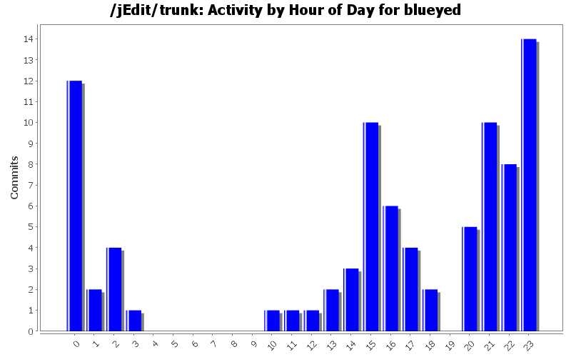
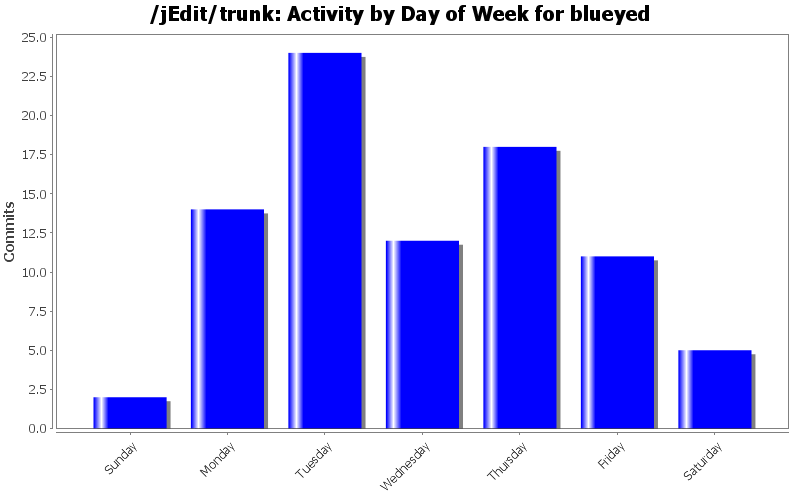
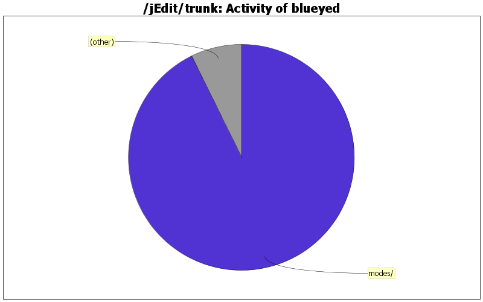

| Directory | Changes | Lines of Code | Lines per Change |
|---|---|---|---|
| Totals | 86 (100.0%) | 2507 (100.0%) | 29.1 |
| modes/ | 45 (52.3%) | 2325 (92.7%) | 51.6 |
| doc/ | 21 (24.4%) | 101 (4.0%) | 4.8 |
| org/gjt/sp/jedit/syntax/ | 2 (2.3%) | 24 (1.0%) | 12.0 |
| org/gjt/sp/jedit/pluginmgr/ | 2 (2.3%) | 16 (0.6%) | 8.0 |
| org/gjt/sp/jedit/buffer/ | 2 (2.3%) | 12 (0.5%) | 6.0 |
| package-files/linux/deb/ | 3 (3.5%) | 10 (0.4%) | 3.3 |
| org/gjt/sp/jedit/ | 5 (5.8%) | 8 (0.3%) | 1.6 |
| org/gjt/sp/jedit/textarea/ | 3 (3.5%) | 5 (0.2%) | 1.6 |
| package-files/linux/ | 1 (1.2%) | 3 (0.1%) | 3.0 |
| macros/C/ | 1 (1.2%) | 2 (0.1%) | 2.0 |
| package-files/windows/ | 1 (1.2%) | 1 (0.0%) | 1.0 |

php.xml: add memory_get_peak_usage to keyword list.
1 lines of code changed in 1 file:
php.xml: nowdoc support (PHP 5.3). Fix Heredoc some.
7 lines of code changed in 1 file:
Attempt to fix regression caused by r16420: when saving a new buffer, it is not the current buffer anymore. See #2887040
0 lines of code changed in 1 file:
php.xml: add xdebug_print_function_stack keyword
1 lines of code changed in 1 file:
patch #2844750: line height correction (disappearing underscores)
9 lines of code changed in 3 files:
typoscript.xml: fix multi-line assignments (AT_WHITESPACE_END for closing bracket)
1 lines of code changed in 1 file:
Fix indent
2 lines of code changed in 1 file:
Fixed #1633393: TextArea painting corruption when saving
11 lines of code changed in 2 files:
package-files: Update email addresses: use devel ML instead of non-existing devel at j.o.
2 lines of code changed in 2 files:
php.xml: minor fixes/improvements
12 lines of code changed in 1 file:
php.xml: PHPDOC: Do no delegate HTML tags to xml::TAGS, which fails miserable when '<' is used.
0 lines of code changed in 1 file:
s/Redo hypersearch/Redo HyperSearch/
1 lines of code changed in 1 file:
VarCompressor: take '%' and '$' into account when checking if an env var is shorter. This fixes 'C:\Programme' being replaced by (the longer) %PROGRAMFILES%.
5 lines of code changed in 1 file:
Fix doc (added the last entry to wrong section)
2 lines of code changed in 1 file:
html.xml: delegate on* attributes to Javascript mode
15 lines of code changed in 2 files:
html.xml: rule "TAGS": use AT_WORD_START for delegation of "style" attribute to css::PROPERTIES.
1 lines of code changed in 1 file:
VarCompressor: ignore OLDPWD environment var
1 lines of code changed in 1 file:
Fix regression from r13987. A-B+C is not the same as A-(B+C)
1 lines of code changed in 1 file:
php mode: Add ESCAPE attribute to "LITERAL1+PHP" and "LITERAL2+PHP" (SF bug #2057968)
5 lines of code changed in 1 file:
Fix word separators in LaTeX mode (SF #1982712)
3 lines of code changed in 2 files:
(41 more)